Завдання на лабораторну роботу
Завдання 1
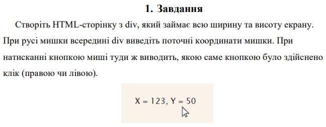Виконання завдання знаходиться тут.
Завдання 2
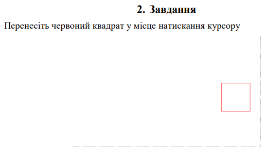Виконання завдання знаходиться тут.
Завдання 3
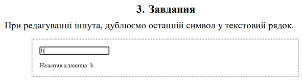Виконання завдання знаходиться тут.
Завдання 4
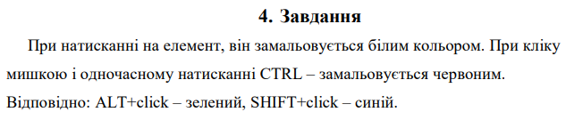Виконання завдання знаходиться тут.
Завдання 5
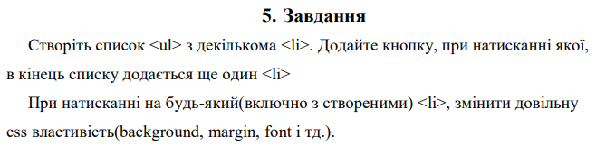Виконання завдання знаходиться тут.
Завдання 6
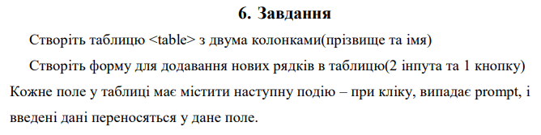Виконання завдання знаходиться тут.
Домашнє завдання
Завдання 7
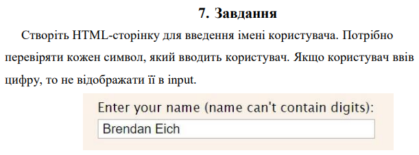Виконання завдання знаходиться тут.
Завдання 8
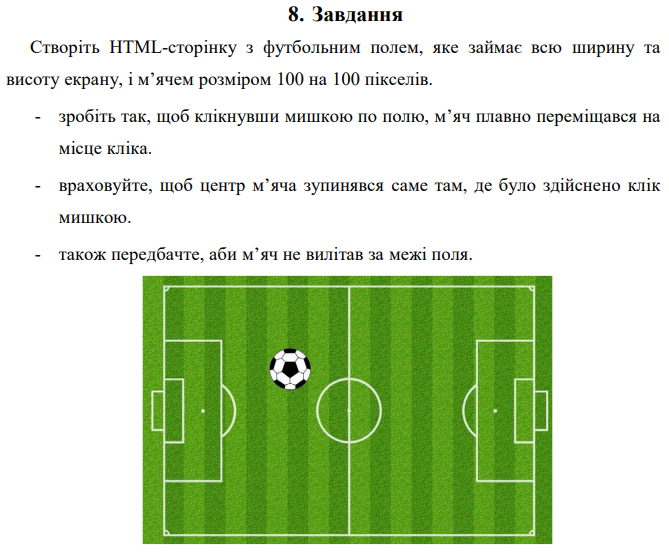Виконання завдання знаходиться тут.
Завдання 9
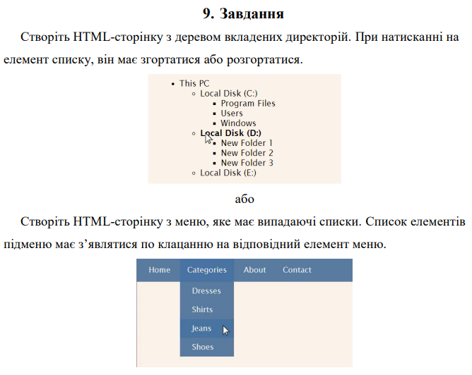Виконання завдання знаходиться тут.
Завдання 10
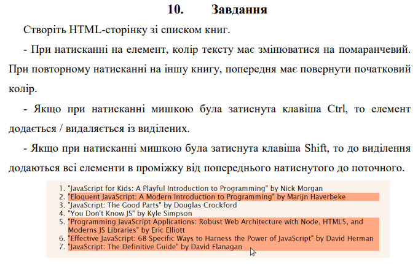Виконання завдання знаходиться тут.
Завдання 11
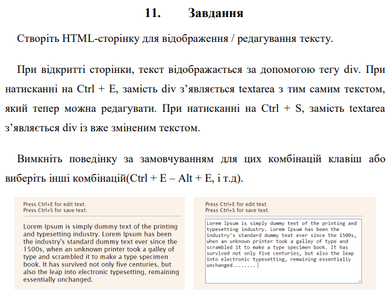Виконання завдання знаходиться тут.
Завдання 12
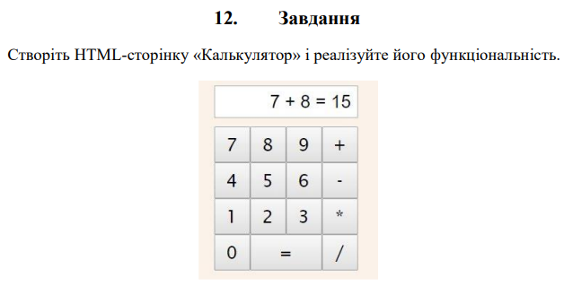Виконання завдання знаходиться тут.